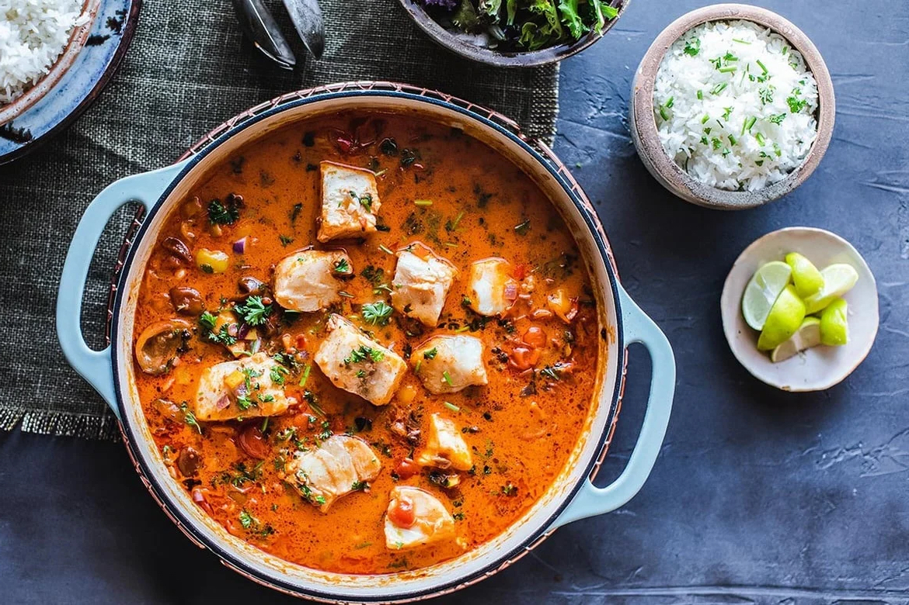

Moqueca

Description
This simple recipe for Brazilian Fish Stew is easy to make and takes
about 35 minutes, perfect for busy weeknights! Brazilians call this
dish Moqueca (pronounced “mo-KEY-ca”) and it can vary a bit from region
to region.
This version hails from Salvador, a bustling city on the coast of Brazil,
just north of Rio de Janeiro that offers up delicious seafood prepared
using African influences and techniques. This part of Brazil is known for
pairing fish with spicy chilies, lime and cooling coconut milk, a lovely
combination.
Ingredients
Fish
-
1 - 1 1/2 pounds firm white fish - halibut, black cod, sea bass
(thicker cuts are best)
- 1/2 teaspoon salt
- one lime, zest and juice
Stew/Sauce
-
2-3 tablespoons coconut or olive oil (or use Dende - Brazillian red
palm oil for the best flavor!)
- 1 onion, finely diced (red, white or yellow)
- 1/2 teaspoon salt
- 1 cup carrot, diced
- 1 red bell pepper, diced
- 4 garlic cloves, roughly chopped
- 1/2 jalapeno, finely diced
- 1 tablespoon tomato paste
- 2 teaspoons paprika
- 1 teaspoon ground cumin (or whole seed)
- 1 cup fish or chicken stock
- 1 1/2 cups tomatoes, diced (preferably fresh)
- 14 ounce can coconut milk (liquid and solids)
- more salt to taste
- 1/2 cup chopped cilantro, scallions or Italian parsley
- squeeze of lime
Steps
-
Rinse and pat dry the fish and cut into 2 inch pieces. Place in a
bowl. Add salt, zest from half the lime and 1 tablespoon lime juice.
Massage lightly to coat all pieces well. Set aside.
-
In a large saute pan, heat the olive oil over medium high heat. Add
onion and salt, and sauté 2-3 minutes. Turn heat down to medium, add
carrot, bell pepper, garlic and jalapeno and cook 4-5 more minutes.
Add tomato paste, spices and stock. Mix and bring to a simmer and add
tomatoes. Cover and simmer gently on medium low for 5 minutes or
until carrots are tender.
-
Add the coconut milk, taste, and add more salt if necessary.
-
Nestle the fish in the stew and simmer gently until it's cooked
through, about 4-6 minutes. Spoon the flavorful coconut broth over
the fish and cook until desired doneness or longer for thicker pieces.
(You can also finish this in a 350F oven).
- Taste, adjust salt, and squeeze with lime.
-
To serve, serve over rice, sprinkle with cilantro or scallions and a
squeeze of lime.
- Drizzle with a little olive oil if you like.